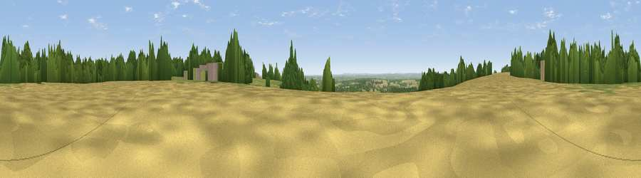

Viewpoint near Charing
#15364 in England · top 23% of its area beats it · near CharingThe view, rendered

A 360° render of this exact spot computed from the terrain model, tree cover and land cover — summer colours, afternoon light, calibrated against photographs of famous viewpoints. Real trees, hedges and buildings will differ in detail.
The panorama
Grey silhouette: terrain skyline in each direction (720 bearings, Earth curvature and refraction included). Dashed green: skyline with trees (+15 m) and buildings (+8 m) as obstacles. Blue strip: how far the ground is visible on each bearing.
Where the view opens
Wedge length = distance to the farthest visible ground on that bearing (vegetation-aware). Rings at 10, 25 and 50 km.
What fills the view
42% cropland · 29% grassland · 25% woodland · 2% built-up · 2% water
Angular shares of the visible panorama (visual magnitude), not map area. Landscape diversity 0.53 (0–1 Shannon).
Key numbers
More beautiful places nearby
The staircase of upgrades: each row has a higher view potential than everything closer. Driving times are estimates from straight-line distance, calibrated against real road routing — check an actual route before setting out.
| Place | Direction | Drive | Score |
|---|---|---|---|
| Viewpoint near Charing | SSE · 0 km | ~2 min | 66.6 |
| Viewpoint near Charing | W · 1 km | ~3 min | 68.6 |
| Viewpoint near Westwell | SE · 4 km | ~8 min | 72.2 |
| Viewpoint near Lympne | SE · 21 km | ~35 min | 72.6 |
| Tolsford Hill | SE · 23 km | ~39 min | 77.9 |
| Viewpoint near Capel-le-Ferne | ESE · 31 km | ~48 min | 80.2 |
| Viewpoint near Willingdon | SW · 61 km | ~84 min | 83.4 |
| Wilmington Hill | SW · 62 km | ~85 min | 85.4 |
51.22043, 0.79852 · source: screening · position refined by local search. Computed location — check access rights before visiting.